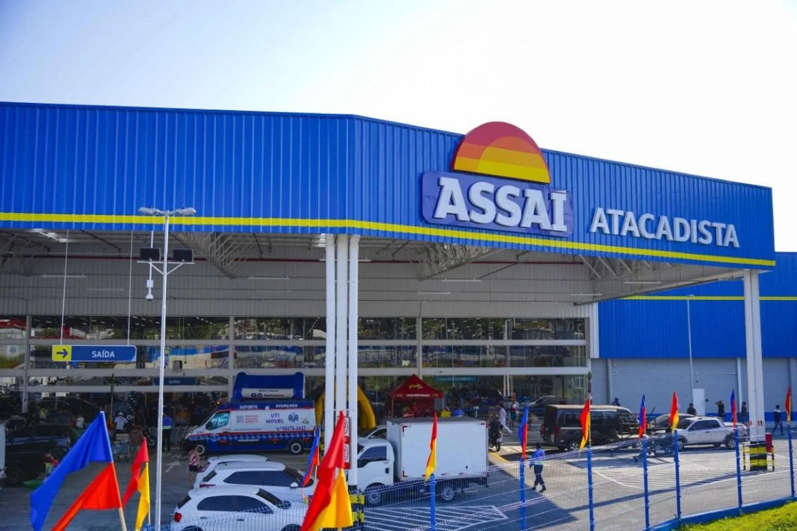

Repórter Davi
Notícias de Feira de Santana e Região
Repórter Davi
Notícias de Feira de Santana e Região
A empresa oferece remuneração e pacote de benefícios compatíveis com o mercado e possui, também, um plano estruturado de carreira.
Publicado em 03/03/2026

Foto: Divulgação
O Assaí está com cerca de 165 vagas abertas para atuar nas lojas no estado da Bahia. Todas as posições de trabalho são elegíveis a pessoas com deficiência e abrangem diferentes áreas operacionais.
Entre as principais oportunidades oferecidas estão vagas para o cargo de Operador(a) de loja e Operador(a) de caixa. Os(as) interessados(as) devem se inscrever diretamente nas vagas disponíveis da região, pelo link e selecione o estado da Bahia na busca. Para o cadastro, é necessário ter em mãos CPF, número de telefone, mais de 18 anos, ensino médio completo e contar com um endereço de e-mail atualizado.
A empresa oferece remuneração e pacote de benefícios compatíveis com o mercado e possui, também, um plano estruturado de carreira, com investimentos constantes em capacitação e no desenvolvimento profissional de seus(suas) colaboradores(as) em todo o país.
O Assaí está presente na Bahia desde 2013 e conta com 24 lojas nas cidades de: Barreiras, Camaçari, Feira de Santana, Guanambi, Ilhéus, Itapetinga, Jequié, Juazeiro, Lauro de Freitas, Paulo Afonso, Salvador, Senhor do Bonfim, Serrinha, Teixeira de Freitas, Vitória da Conquista. Ao todo, a companhia gera cerca de 12 mil empregos entre diretos e indiretos.